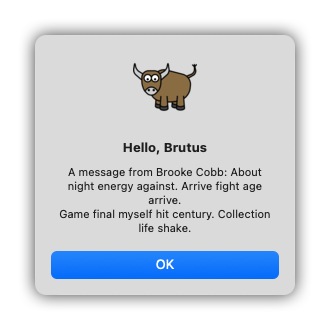
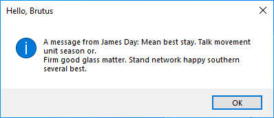
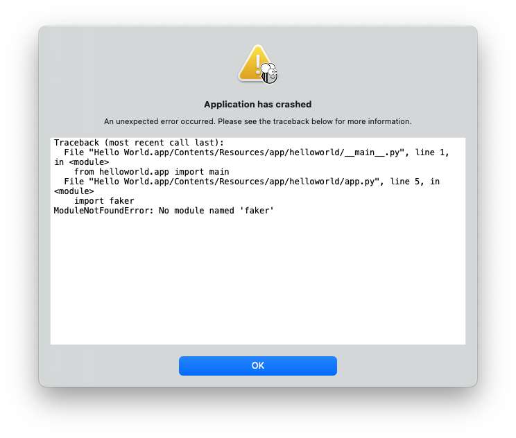

Esercitazione 7 - Iniziare questa (terza-)festa¶
Finora, l'applicazione che abbiamo costruito ha utilizzato solo il nostro codice e quello fornito da BeeWare. Tuttavia, in un'applicazione reale, è probabile che si voglia utilizzare una libreria di terze parti, scaricata dal Python Package Index (PyPI).
Modifichiamo la nostra applicazione per includere una libreria di terze parti.
Aggiunta di un pacchetto¶
Modifichiamo la nostra applicazione per dire qualcosa di più di un semplice "Ehilà!".
Per generare un testo più interessante per la finestra di dialogo, utilizzeremo una libreria chiamata Faker. Faker è un pacchetto Python che genera contenuti falsi, inclusi nomi e blocchi di testo. I nomi e le parole del blocco di testo sono generati da un elenco arbitrario di parole fornito da Faker. Useremo Faker per costruire un messaggio falso, come se qualcuno stesse rispondendo all'utente.
Aggiungiamo una chiamata API httpx alla nostra applicazione. Aggiungiamo
un'importazione all'inizio di app.py per importare httpx:
import faker
Per rendere il nostro tutorial asincrono, modificare il gestore dell'evento
say_hello() in modo che assomigli a questo:
async def say_hello(self, widget):
fake = faker.Faker()
await self.main_window.dialog(
toga.InfoDialog(
greeting(self.name_input.value),
f"A message from {fake.name()}: {fake.text()}",
)
)
Eseguiamo la nostra applicazione aggiornata in modalità sviluppatore di Briefcase per verificare che la nostra modifica abbia funzionato.
(beeware-venv) $ briefcase dev
Traceback (most recent call last):
File ".../venv/bin/briefcase", line 5, in <module>
from briefcase.__main__ import main
File ".../venv/lib/python3.13/site-packages/briefcase/__main__.py", line 3, in <module>
from .cmdline import parse_cmdline
File ".../venv/lib/python3.13/site-packages/briefcase/cmdline.py", line 6, in <module>
from briefcase.commands import DevCommand, NewCommand, UpgradeCommand
File ".../venv/lib/python3.13/site-packages/briefcase/commands/__init__.py", line 1, in <module>
from .build import BuildCommand # noqa
File ".../venv/lib/python3.13/site-packages/briefcase/commands/build.py", line 5, in <module>
from .base import BaseCommand, full_options
File ".../venv/lib/python3.13/site-packages/briefcase/commands/base.py", line 14, in <module>
import faker
ModuleNotFoundError: No module named 'faker'
(beeware-venv) $ briefcase dev
Traceback (most recent call last):
File ".../venv/bin/briefcase", line 5, in <module>
from briefcase.__main__ import main
File ".../venv/lib/python3.13/site-packages/briefcase/__main__.py", line 3, in <module>
from .cmdline import parse_cmdline
File ".../venv/lib/python3.13/site-packages/briefcase/cmdline.py", line 6, in <module>
from briefcase.commands import DevCommand, NewCommand, UpgradeCommand
File ".../venv/lib/python3.13/site-packages/briefcase/commands/__init__.py", line 1, in <module>
from .build import BuildCommand # noqa
File ".../venv/lib/python3.13/site-packages/briefcase/commands/build.py", line 5, in <module>
from .base import BaseCommand, full_options
File ".../venv/lib/python3.13/site-packages/briefcase/commands/base.py", line 14, in <module>
import faker
ModuleNotFoundError: No module named 'faker'
(beeware-venv) C:\...>briefcase dev
Traceback (most recent call last):
File "...\venv\bin\briefcase", line 5, in <module>
from briefcase.__main__ import main
File "...\venv\lib\python3.13\site-packages\briefcase\__main__.py", line 3, in <module>
from .cmdline import parse_cmdline
File "...\venv\lib\python3.13\site-packages\briefcase\cmdline.py", line 6, in <module>
from briefcase.commands import DevCommand, NewCommand, UpgradeCommand
File "...\venv\lib\python3.13\site-packages\briefcase\commands\__init__.py", line 1, in <module>
from .build import BuildCommand # noqa
File "...\venv\lib\python3.13\site-packages\briefcase\commands\build.py", line 5, in <module>
from .base import BaseCommand, full_options
File "...\venv\lib\python3.13\site-packages\briefcase\commands\base.py", line 14, in <module>
import faker
ModuleNotFoundError: No module named 'faker'
Non è possibile eseguire un'applicazione Android in modalità sviluppatore: utilizzare le istruzioni per la piattaforma desktop scelta.
Non è possibile eseguire un'app per iOS in modalità sviluppatore: utilizzare le istruzioni per la piattaforma desktop scelta.
Cosa è successo? Abbiamo aggiunto faker al nostro codice, ma non lo abbiamo
aggiunto all'ambiente virtuale utilizzato per eseguire l'app in modalità di
sviluppo.
Quando Briefcase esegue un'applicazione in modalità di sviluppo, crea un
ambiente virtuale autonomo per quell'applicazione, indipendente dall'ambiente in
cui si esegue briefcase. Se l'applicazione non dichiara di aver bisogno di una
libreria particolare, tale libreria non verrà installata nell'ambiente virtuale
di sviluppo.
Come si aggiunge un nuovo requisito alla propria applicazione?
Aggiornamento delle dipendenze¶
Nella directory principale dell'applicazione, c'è un file chiamato
pyproject.toml. Questo file contiene tutti i dettagli di configurazione
dell'applicazione forniti al momento dell'esecuzione di briefcase new.
il file pyproject.toml è suddiviso in sezioni; una delle sezioni descrive le
impostazioni per l'applicazione:
[tool.briefcase.app.helloworld]
formal_name = "Hello World"
description = "A Tutorial app"
long_description = """More details about the app should go here.
"""
sources = ["src/helloworld"]
requires = []
L'opzione requires descrive le dipendenze della nostra applicazione. Si tratta
di un elenco di stringhe che specificano le librerie (e, facoltativamente, le
versioni delle librerie) che desideri includere nella tua app.
Modificare l'impostazione requires in modo che si legga:
requires = [
"faker",
]
Aggiungendo questa impostazione, si dice a Briefcase "quando costruisci la mia
applicazione, esegui pip install httpx nel bundle dell'applicazione".
Qualsiasi cosa che sia un input legale per pip install può essere usato qui,
quindi si può specificare:
- Una versione specifica della libreria (ad esempio,
"httpx==0.19.0"); - Un intervallo di versioni della libreria (ad esempio,
"httpx>=0.19"); - Un percorso a un repository git (ad esempio,
git+https://github.com/encode/httpx"); oppure - Un percorso di file locale (tuttavia, attenzione: se si dà il codice a qualcun altro, questo percorso probabilmente non esisterà sulla sua macchina)
Più avanti in pyproject.toml, si noteranno altre sezioni che dipendono dal
sistema operativo, come [tool.briefcase.app.helloworld.macOS] e
[tool.briefcase.app.helloworld.windows]. Queste sezioni hanno anche
un'impostazione requires. Queste impostazioni consentono di definire
dipendenze aggiuntive specifiche per la piattaforma; quindi, ad esempio, se si
ha bisogno di una libreria specifica per la piattaforma per gestire alcuni
aspetti dell'applicazione, si può specificare tale libreria nella sezione
requires specifica per la piattaforma, e tale impostazione sarà utilizzata
solo per quella piattaforma. Si noterà che le librerie toga sono tutte
specificate nella sezione requires specifica della piattaforma, perché le
librerie necessarie per visualizzare l'interfaccia utente sono specifiche della
piattaforma.
Nel nostro caso, vogliamo che httpx sia installato su tutte le piattaforme,
quindi usiamo l'impostazione requires a livello di applicazione. Le dipendenze
a livello di applicazione saranno sempre installate; le dipendenze specifiche
della piattaforma sono installate in aggiunta a quelle a livello di
applicazione.
Una volta aggiunto il nuovo requisito, salva pyproject.toml ed esegui
briefcase dev -r. Il flag -r indica a Briefcase che i requisiti sono
cambiati e che l'ambiente virtuale di sviluppo deve essere aggiornato:
(beeware-venv) $ briefcase dev -r
[helloworld] Activating dev environment...
...
Recreating virtual environment (dev.cpython-313-darwin)... done
[hello-world] Installing requirements...
...
[helloworld] Starting in dev mode...
===========================================================================
Quando si inserisce un nome e si preme il pulsante, dovrebbe apparire una finestra di dialogo simile a questa:

(beeware-venv) $ briefcase dev -r
[helloworld] Activating dev environment...
...
Recreating virtual environment (dev.cpython-313-x86_64-linux-gnu)... done
[hello-world] Installing requirements...
...
[helloworld] Starting in dev mode...
===========================================================================
Quando si inserisce un nome e si preme il pulsante, dovrebbe apparire una finestra di dialogo simile a questa:

(beeware-venv) C:\...>briefcase dev -r
[helloworld] Activating dev environment...
...
Recreating virtual environment (dev.cp313-win_amd64)... done
[hello-world] Installing requirements...
...
[helloworld] Starting in dev mode...
===========================================================================
Quando si inserisce un nome e si preme il pulsante, dovrebbe apparire una finestra di dialogo simile a questa:

Non è possibile eseguire un'applicazione Android in modalità sviluppatore: utilizzare le istruzioni per la piattaforma desktop scelta.
Non è possibile eseguire un'app per iOS in modalità sviluppatore: utilizzare le istruzioni per la piattaforma desktop scelta.
Possibili errori durante l'esecuzione di briefcase dev
Se continui a ricevere un errore durante l'esecuzione di briefcase dev,
assicurati che:
- Hai aggiunto
fakerall'elencorequiresinpyproject.toml; - Hai salvato le modifiche in
pyproject.toml; e - Hai incluso l'argomento
-rdurante l'esecuzione dibriefcase dev -r.
La prima volta che esegui l'app utilizzando briefcase dev, l'argomento -r
viene aggiunto automaticamente, ecco perché fino ad ora non abbiamo dovuto
utilizzare l'argomento -r. L'argomento -r è necessario solo quando aggiungi,
rimuovi o modifichi un requisito dopo aver eseguito l'applicazione in modalità
di sviluppo. Se hai solo aggiornato il codice, puoi eseguire briefcase dev
come abbiamo fatto nel resto di questo tutorial.
Esecuzione dell'applicazione aggiornata¶
Ora abbiamo un'applicazione funzionante, che utilizza una libreria di terze parti, in esecuzione in modalità di sviluppo. Procediamo con il pacchettizzazione di questo codice applicativo aggiornato come applicazione autonoma. Poiché abbiamo apportato modifiche al codice, dobbiamo seguire gli stessi passaggi indicati nel Tutorial 4:
Aggiornare il codice dell'applicazione confezionata:
(beeware-venv) $ briefcase update
[helloworld] Updating application code...
...
[helloworld] Application updated.
Ricostruire l'applicazione:
(beeware-venv) $ briefcase build
[helloworld] Adhoc signing app...
[helloworld] Built build/helloworld/macos/app/Hello World.app
Infine, eseguire l'applicazione:
(beeware-venv) $ briefcase run
[helloworld] Starting app...
===========================================================================
Tuttavia, quando l'applicazione viene eseguita, viene visualizzato un errore nella console e una finestra di dialogo di arresto anomalo:

Aggiornare il codice dell'applicazione confezionata:
(beeware-venv) $ briefcase update
[helloworld] Updating application code...
...
[helloworld] Application updated.
Ricostruire l'applicazione:
(beeware-venv) $ briefcase build
[helloworld] Finalizing application configuration...
...
[helloworld] Building application...
...
[helloworld] Built build/helloworld/linux/ubuntu/jammy/helloworld-0.0.1/usr/bin/helloworld
Infine, eseguire l'applicazione:
(beeware-venv) $ briefcase run
[helloworld] Starting app...
===========================================================================
Tuttavia, quando l'applicazione viene eseguita, viene visualizzato un errore nella console:
Traceback (most recent call last):
File "/usr/lib/python3.13/runpy.py", line 194, in _run_module_as_main
return _run_code(code, main_globals, None,
File "/usr/lib/python3.13/runpy.py", line 87, in _run_code
exec(code, run_globals)
File "/home/brutus/beeware-tutorial/helloworld/build/linux/ubuntu/jammy/helloworld-0.0.1/usr/app/hello_world/__main__.py", line 1, in <module>
from helloworld.app import main
File "/home/brutus/beeware-tutorial/helloworld/build/linux/ubuntu/jammy/helloworld-0.0.1/usr/app/hello_world/app.py", line 8, in <module>
import faker
ModuleNotFoundError: No module named 'faker'
Unable to start app helloworld.
Aggiornare il codice dell'applicazione confezionata:
(beeware-venv) C:\...>briefcase update
[helloworld] Updating application code...
...
[helloworld] Application updated.
Ricostruire l'applicazione:
(beeware-venv) C:\...>briefcase build
...
[helloworld] Built build\helloworld\windows\app\src\Toga Test.exe
Infine, eseguire l'applicazione:
(beeware-venv) C:\...>briefcase run
[helloworld] Starting app...
===========================================================================
Tuttavia, quando l'applicazione viene eseguita, viene visualizzato un errore nella console e una finestra di dialogo di arresto anomalo:

Aggiornare il codice dell'applicazione confezionata:
(beeware-venv) $ briefcase update android
[helloworld] Updating application code...
...
[helloworld] Application updated.
Ricostruire l'applicazione:
(beeware-venv) $ briefcase build android
[helloworld] Updating app metadata...
...
[helloworld] Built build/helloworld/android/gradle/app/build/outputs/apk/debug/app-debug.apk
Infine, eseguire l'applicazione (selezionando un simulatore quando richiesto):
(beeware-venv) $ briefcase run android
[helloworld] Following device log output (type CTRL-C to stop log)...
===========================================================================
Tuttavia, quando l'applicazione viene eseguita, viene visualizzato un errore nella console:
--------- beginning of crash
E/AndroidRuntime: FATAL EXCEPTION: main
E/AndroidRuntime: Process: com.example.helloworld, PID: 8289
E/AndroidRuntime: java.lang.RuntimeException: Unable to start activity ComponentInfo{com.example.helloworld/org.beeware.android.MainActivity}: com.chaquo.python.PyException: ModuleNotFoundError: No module named 'faker'
E/AndroidRuntime: at android.app.ActivityThread.performLaunchActivity(ActivityThread.java:3635)
E/AndroidRuntime: at android.app.ActivityThread.handleLaunchActivity(ActivityThread.java:3792)
E/AndroidRuntime: at android.app.servertransaction.LaunchActivityItem.execute(LaunchActivityItem.java:103)
E/AndroidRuntime: at android.app.servertransaction.TransactionExecutor.executeCallbacks(TransactionExecutor.java:135)
E/AndroidRuntime: at android.app.servertransaction.TransactionExecutor.execute(TransactionExecutor.java:95)
E/AndroidRuntime: at android.app.ActivityThread$H.handleMessage(ActivityThread.java:2210)
E/AndroidRuntime: at android.os.Handler.dispatchMessage(Handler.java:106)
E/AndroidRuntime: at android.os.Looper.loopOnce(Looper.java:201)
E/AndroidRuntime: at android.os.Looper.loop(Looper.java:288)
E/AndroidRuntime: at android.app.ActivityThread.main(ActivityThread.java:7839)
E/AndroidRuntime: at java.lang.reflect.Method.invoke(Native Method)
E/AndroidRuntime: at com.android.internal.os.RuntimeInit$MethodAndArgsCaller.run(RuntimeInit.java:548)
E/AndroidRuntime: at com.android.internal.os.ZygoteInit.main(ZygoteInit.java:1003)
E/AndroidRuntime: Caused by: com.chaquo.python.PyException: ModuleNotFoundError: No module named 'faker'
E/AndroidRuntime: at <python>.helloworld.app.<module>(app.py:8)
E/AndroidRuntime: at <python>.java.chaquopy.import_override(import.pxi:60)
E/AndroidRuntime: at <python>.__main__.<module>(__main__.py:1)
E/AndroidRuntime: at <python>.runpy._run_code(<frozen runpy>:88)
E/AndroidRuntime: at <python>.runpy._run_module_code(<frozen runpy>:98)
E/AndroidRuntime: at <python>.runpy.run_module(<frozen runpy>:226)
E/AndroidRuntime: at <python>.chaquopy_java.call(chaquopy_java.pyx:352)
E/AndroidRuntime: at <python>.chaquopy_java.Java_com_chaquo_python_PyObject_callAttrThrowsNative(chaquopy_java.pyx:324)
E/AndroidRuntime: at com.chaquo.python.PyObject.callAttrThrowsNative(Native Method)
E/AndroidRuntime: at com.chaquo.python.PyObject.callAttrThrows(PyObject.java:232)
E/AndroidRuntime: at com.chaquo.python.PyObject.callAttr(PyObject.java:221)
E/AndroidRuntime: at org.beeware.android.MainActivity.onCreate(MainActivity.java:85)
E/AndroidRuntime: at android.app.Activity.performCreate(Activity.java:8051)
E/AndroidRuntime: at android.app.Activity.performCreate(Activity.java:8031)
E/AndroidRuntime: at android.app.Instrumentation.callActivityOnCreate(Instrumentation.java:1329)
E/AndroidRuntime: at android.app.ActivityThread.performLaunchActivity(ActivityThread.java:3608)
E/AndroidRuntime: ... 12 more
I/Process : Sending signal. PID: 8289 SIG: 9
Aggiornare il codice dell'applicazione confezionata:
(beeware-venv) $ briefcase update iOS
[helloworld] Updating application code...
...
[helloworld] Application updated.
Ricostruire l'applicazione:
(beeware-venv) $ briefcase build iOS
[helloworld] Updating app metadata...
...
[helloworld] Built build/helloworld/ios/xcode/build/Debug-iphonesimulator/Hello World.app
Infine, eseguire l'applicazione (selezionando un simulatore quando richiesto):
(beeware-venv) $ briefcase run iOS
...
[helloworld] Following simulator log output (type CTRL-C to stop log)...
===========================================================================
Tuttavia, quando l'applicazione viene eseguita, viene visualizzato un errore nella console:
Application has crashed!
========================
Traceback (most recent call last):
File "/Users/rkm/Library/Developer/CoreSimulator/Devices/FD7EA28A-6D72-4064-9D8A-53CC8308BB6F/data/Containers/Bundle/Application/D9DD590B-DA32-4EE1-8F78-78658379CAB7/Hello World.app/app/helloworld/__main__.py", line 1, in <module>
from helloworld.app import main
File "/Users/rkm/Library/Developer/CoreSimulator/Devices/FD7EA28A-6D72-4064-9D8A-53CC8308BB6F/data/Containers/Bundle/Application/D9DD590B-DA32-4EE1-8F78-78658379CAB7/Hello World.app/app/helloworld/app.py", line 8, in <module>
import faker
ModuleNotFoundError: No module named 'faker'
Ancora una volta, l'applicazione non si è avviata perché faker non è stato
installato - ma perché? Non abbiamo già installato faker?
Sì, ma solo nell'ambiente di sviluppo. Ogni applicazione creata ha anche un
proprio ambiente autonomo, che è uno degli elementi generati da Briefcase quando
si esegue briefcase build. Quando abbiamo eseguito briefcase dev -r, abbiamo
aggiunto faker al nostro ambiente di sviluppo, ma non all'app
pacchettizzata. Dobbiamo anche eseguire briefcase update -r affinché Briefcase
riconosca che i requisiti dell'app pacchettizzata sono cambiati:
(beeware-venv) $ briefcase update -r
[helloworld] Updating application code...
Installing src/hello_world...
[helloworld] Updating requirements...
Collecting faker
Using cached faker-37.3.0-py3-none-any.whl.metadata (15 kB)
...
Installing collected packages: tzdata, travertino, std-nslog, rubicon-objc, fonttools, toga-core, faker, toga-cocoa
Successfully installed faker-37.3.0 fonttools-4.58.1 rubicon-objc-0.5.1 std-nslog-1.0.3 toga-cocoa-0.5.1 toga-core-0.5.1 travertino-0.5.1 tzdata-2025.2
[helloworld] Removing unneeded app content...
...
[helloworld] Application updated.
(beeware-venv) $ briefcase update -r
[helloworld] Finalizing application configuration...
Targeting ubuntu:jammy (Vendor base debian)
Determining glibc version... done
Targeting glibc 2.35
Targeting Python3.13
[helloworld] Updating application code...
Installing src/hello_world...
[helloworld] Updating requirements...
Collecting faker
Using cached faker-37.3.0-py3-none-any.whl.metadata (15 kB)
...
Installing collected packages: tzdata, travertino, std-nslog, rubicon-objc, fonttools, toga-core, faker, toga-cocoa
Successfully installed faker-37.3.0 fonttools-4.58.1 rubicon-objc-0.5.1 std-nslog-1.0.3 toga-cocoa-0.5.1 toga-core-0.5.1 travertino-0.5.1 tzdata-2025.2
[helloworld] Removing unneeded app content...
...
[helloworld] Application updated.
(beeware-venv) C:\...>briefcase update -r
[helloworld] Updating application code...
Installing src/helloworld...
[helloworld] Updating requirements...
Collecting faker
Using cached faker-37.3.0-py3-none-any.whl.metadata (15 kB)
...
Installing collected packages: tzdata, travertino, std-nslog, rubicon-objc, fonttools, toga-core, faker, toga-cocoa
Successfully installed faker-37.3.0 fonttools-4.58.1 rubicon-objc-0.5.1 std-nslog-1.0.3 toga-cocoa-0.5.1 toga-core-0.5.1 travertino-0.5.1 tzdata-2025.2
[helloworld] Removing unneeded app content...
...
[helloworld] Application updated.
(beeware-venv) $ briefcase update android -r
[helloworld] Updating application code...
Installing src/helloworld... done
[helloworld] Updating requirements...
Writing requirements file... done
[helloworld] Removing unneeded app content...
Removing unneeded app bundle content... done
[helloworld] Application updated.
(beeware-venv) $ briefcase update iOS -r
[helloworld] Updating application code...
Installing src/helloworld... done
[helloworld] Updating requirements...
Looking in indexes: https://pypi.org/simple, https://pypi.anaconda.org/beeware/simple
Collecting faker
Using cached faker-37.4.0-py3-none-any.whl.metadata (15 kB)
...
Installing app requirements for iPhone simulator... done
[helloworld] Removing unneeded app content...
Removing unneeded app bundle content... done
[helloworld] Application updated.
Una volta effettuato l'aggiornamento, si può eseguire briefcase build e
briefcase run e si dovrebbe vedere l'applicazione confezionata, con il nuovo
comportamento della finestra di dialogo.
Nota
L'opzione -r per l'aggiornamento dei requisiti viene rispettata anche dai
comandi build e run, quindi se si vuole aggiornare, compilare ed eseguire in
un unico passaggio, si può usare briefcase run -u -r.
Pacchetti Python di terze parti per mobile e web¶
Faker è solo un esempio di pacchetto Python di terze parti, ovvero una raccolta
di codice che non fa parte di ciò che Python fornisce in partenza. Questi
pacchetti di terze parti sono comunemente distribuiti tramite Python Package
Index (PyPI) e installati nell'ambiente virtuale locale. In
questo tutorial abbiamo usato pip, ma ci sono altre opzioni.
Sulle piattaforme desktop (macOS, Windows, Linux), qualsiasi pip installabile
può essere aggiunto ai requisiti. Sulle piattaforme mobili e web, le opzioni
sono leggermente
limitate.
In breve, qualsiasi pacchetto pure Python (cioè qualsiasi pacchetto creato da un progetto scritto solo in Python) può essere utilizzato senza problemi. Alcuni pacchetti, tuttavia, sono creati da progetti che contengono sia Python che altri linguaggi (ad esempio C, C++, Rust, ecc.). Il codice scritto in questi linguaggi deve essere compilato in moduli binari specifici per la piattaforma prima di poter essere utilizzato e questi moduli binari precompilati sono disponibili solo su piattaforme specifiche. Le piattaforme mobili e web hanno requisiti molto diversi dalle piattaforme desktop "standard". Al momento, la maggior parte dei pacchetti Python non fornisce binari precompilati per le piattaforme mobili e web.
Su PyPI, i pacchetti sono spesso forniti in un formato di distribuzione
precostituito chiamato wheels. Per verificare se un pacchetto è puro Python,
guardate la pagina dei download di PyPI per il progetto. Se le ruote fornite
hanno il suffisso -py3-none-any.whl (per esempio,
Faker), allora sono ruote Python
pure. Tuttavia, se le ruote hanno estensioni specifiche per versione e
piattaforma (per esempio,
Pillow, che ha ruote con
suffissi come -cp313-cp313-macosx_11_0_arm64.whl e
-cp39-cp39-win_amd64.whl), allora la ruota contiene un componente binario.
Questo pacchetto non può essere installato su piattaforme mobili o web, a meno
che non sia stata fornita una versione compatibile con tali piattaforme.
Al momento, la maggior parte dei pacchetti binari su PyPI non fornisce ruote
compatibili con i cellulari o il web. Per colmare questa lacuna, BeeWare
fornisce i binari per alcuni moduli binari popolari (tra cui numpy, pandas e
cryptography). Questi binari non sono distribuiti su PyPI, ma Briefcase li
installerà se sono disponibili.
BeeWare può fornire binari per alcuni moduli binari popolari (tra cui numpy,
pandas e cryptography). È di solito possibile compilare pacchetti per le
piattaforme mobili, ma non è facile da configurare, il che esula dallo scopo di
un tutorial introduttivo come questo.
Prossimi passi¶
Ora abbiamo un'applicazione che utilizza una libreria di terze parti! In Tutorial 8 impareremo a garantire che la nostra applicazione rimanga reattiva man mano che aggiungiamo una logica applicativa più complessa.